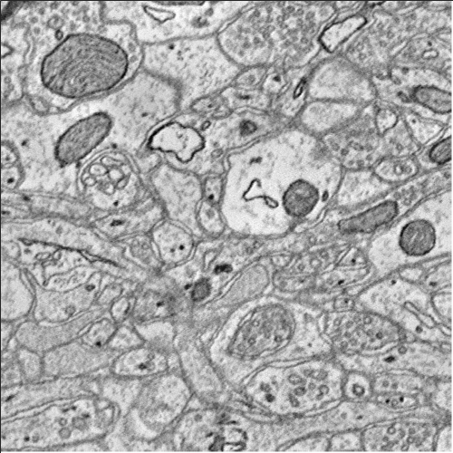
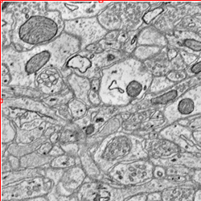
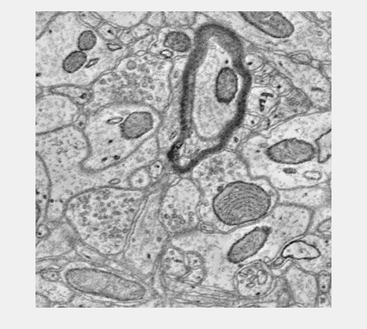
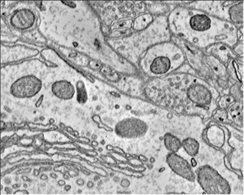
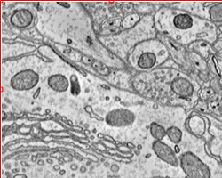
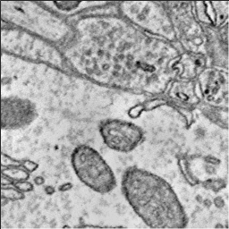
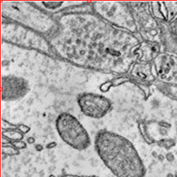

Contents
CAJAL3D Demo Script
Set xyz starting point. Since anyone can use this script you may want to "move" to a different region to run.
xstart = 3000; ystart = 6000; zstart = 400;
Create OCP Interface and set tokens
% Create an OCP Object. This is the main class used for talking with OCP % services. If you want to create an OCP object that will use the % distributed semaphore (assuming you've set it up) use OCP('semaphore') % instead. oo = OCP(); % Set the server location. This is the default server and most likely the % one you should be using. oo.setServerLocation('http://openconnecto.me/'); % Set the image token. This is the database for image data reading. oo.setImageToken('kasthuri11cc'); % Set the image token. This is the database for image data reading. You % can also read this from a file using setAnnoTokenFile. Also update % propagate status to make the annotation project writeable. % Note: We do not propagate in the demo script. oo.setAnnoToken('cajal_demo'); oo.setAnnoChannel('anno'); oo.makeAnnoWritable(); % Information about the databases are accessible oo.annoInfo.DATASET oo.annoInfo.DATASET.IMAGE_SIZE(1) % Set the default resolution. This is the resolution at which operations % should occur unless otherwise specified. oo.setDefaultResolution(1); % There are other options to further tweak the OCP object. % oo.setBatchSize - This sets the maximum number of objects the API will % group into a single batch write. You shouldn't have to change this. % oo.setMaxAnnoSize - This is the maximum size an annotation can be before % the API automatically chunks it up into multiple writes. You shouldn't % have to touch this. % oo.setErrorPageLocation - this is where OCP errors will be written. The % server generates an html response that can be viewed for debugging.
ans =
CUBE_DIMENSION: [8x1 containers.Map]
IMAGE_SIZE: [8x1 containers.Map]
NAME: {'kasthuri11cc'}
OFFSET: [8x1 containers.Map]
RESOLUTIONS: [0 1 2 3 4 5 6 7]
TIMERANGE: [0 0]
VOXELRES: [8x1 containers.Map]
ans =
10752 13312 1850
Get Some Image Data
The OCPQuery object is the basis for building queries for the database. The constructors accept multiple options so check out the code.
% Build query to cutout IMAGE data. q = OCPQuery(eOCPQueryType.imageDense); % The validate method can be used to check if the query has any errors [pf, msg] = q.validate() % setCutoutArgs sets all the required fields for a cutout query. q.setCutoutArgs([xstart xstart+500],... [ystart ystart+500],... [zstart zstart+5],... 1); % Query is now valid [pf, msg] = q.validate() % Download the data into a RAMONVolume. The RAMONVolume stores the image % data in the .data property. There are other useful bits of information, % specifically the xyzOffset value which indicates where the data came % from. cutout = oo.query(q); cutout % The image method has been overloaded to launch the API's simple data % viewer. '?' prints the shortcuts image(cutout);
pf =
0
msg =
[E] X Range is required for dense cutouts
[E] Y Range is required for dense cutouts
[E] Z Range is required for dense cutouts
[W] Resolution is empty. Default resolution will be used at runtime.
pf =
1
msg =
''
cutout =
500x500x5 RAMONVolume array with properties:
xyzOffset: [3000 6000 400]
resolution: 1
name: 'image'
sliceDisplayIndex: 1
dataFormat: [1x1 eRAMONDataFormat]
data: [500x500x5 uint8]
id: []
channel: []
confidence: 1
dynamicMetadata: [0x1 containers.Map]
status: [1x1 eRAMONAnnoStatus]
author: 'unspecified'
dataType: [1x1 eRAMONChannelDataType]
channelType: [1x1 eRAMONChannelType]
  Create a Synapse
Create some 'dummy' labels
d = zeros(200,200,5); d(30:170,30:170,:) = 1; % Create an empty RAMONSynapse object s1 = RAMONSynapse() % Set the objects properties as desired. s1.setCutout(uint32(d)); s1.setXyzOffset([xstart ystart zstart]); s1.setResolution(1); s1.setSynapseType(eRAMONSynapseType.excitatory); s1.setSeeds([2 4 6 3]); s1.setConfidence(.8);
s1 =
0x0 RAMONSynapse array with properties:
synapseType: [1x1 eRAMONSynapseType]
weight: []
segments: [0x1 containers.Map]
seeds: []
xyzOffset: []
resolution: []
name: 'Volume1'
sliceDisplayIndex: 1
dataFormat: [1x1 eRAMONDataFormat]
data: []
id: []
channel: []
confidence: 1
dynamicMetadata: [0x1 containers.Map]
status: [1x1 eRAMONAnnoStatus]
author: 'unspecified'
dataType: []
channelType: []
Upload a Synapse
%Simply passing the RAMON object (or any RAMON object really...) will upload %the data and create an annotation. The database will assign an ID as long %as the ID was empty in the RAMON object. id1 = oo.createAnnotation(s1);
Download a Synapse
The server can't get objects that don't exist THIS LINE SHOULD THROW AN EXCEPTION AS AN EXAMPLE
%sbad = oo.query(OCPQuery(eOCPQueryType.RAMONDense,4565564531)); % Download the synapse we just uploaded. s1 and s2 should now contain the % same data, but s2 has been spatially aligned to the backend storage cuboids and has % been assigned an ID. s2 = oo.query(OCPQuery(eOCPQueryType.RAMONDense,id1));
Update a Synapse
You can directly update metadata fields
f = OCPFields(); oo.getField(id1,f.synapse.author) oo.setField(id1,f.synapse.author,'demo_test'); oo.getField(id1,f.synapse.author) % You can also update the object locally and then push the changes. if % you're changing the annotation data this is how it is done as well. oo.getField(id1,f.synapse.weight) s2.setWeight(.5); id1 = oo.updateAnnotation(s2); oo.getField(id1,f.synapse.weight)
ans =
unspecified
ans =
demo_test
ans =
0
ans =
0.5000
Query for Synapses
You can query the database for IDs that match some list of predicates. This can also be done spatially!
q = OCPQuery(eOCPQueryType.RAMONIdList);
q.addIdListPredicate(eOCPPredicate.type,eRAMONAnnoType.synapse);
idList = oo.query(q) %#ok<*NASGU,*NOPTS>
idList =
1 3 14
Delete a Synapse
Delete and annotation by its ID
oo.deleteAnnotation(id1) idList = oo.query(q)
ans =
Success
idList =
1 3
Re-Upload the Synapse
% Create some 'dummy' labels d = zeros(200,200,5); d(30:170,30:170,:) = 1; % Create an RAMONSynapse object with a single call. s3 = RAMONSynapse(d,eRAMONDataFormat.dense,[xstart+450 ystart+540 zstart+65],1); id3 = oo.createAnnotation(s3);
Download a server side rendered overlay image (2D only)
q = OCPQuery(eOCPQueryType.overlaySlice); q.setSliceArgs(eOCPSlicePlane.xy,... [s1.xyzOffset(1) - 250, s1.xyzOffset(1) + 250],... [s1.xyzOffset(2) - 250, s1.xyzOffset(2) + 250],... s1.xyzOffset(3) + 2,... 1) slice = oo.query(q); figure; imshow(slice); % You can set the alpha too. q.setOverlayAlpha(.7); slice = oo.query(q); figure; imshow(slice); % You can set the alpha too. q.setOverlayAlpha(.3); slice = oo.query(q); figure; imshow(slice);
ans =
OCPQuery with properties:
type: [1x1 eOCPQueryType]
id: []
resolution: 1
xRange: []
yRange: []
zRange: []
slicePlane: [1x1 eOCPSlicePlane]
aRange: [2750 3250]
bRange: [5750 6250]
cIndex: 402
overlayAlpha: []
idListPredicates: [0x1 containers.Map]
idListLimit: []
xyzCoord: []
filterIds: []
channels: []
 

Download Image and Anno Cutouts
Finally lets cutout both an image and annotation volume around the annotation we created and view them together using the basic viewer.
% You can do it the hard manual way. q = OCPQuery(eOCPQueryType.annoDense); q.setCutoutArgs([s3.xyzOffset(1) - 250 s3.xyzOffset(1) + 250],... [s3.xyzOffset(2) - 150 s3.xyzOffset(2) + 250],... [s3.xyzOffset(3) - 3 s3.xyzOffset(3) + 3],... 1); cutoutAnno = oo.query(q); q = OCPQuery(eOCPQueryType.imageDense); q.setCutoutArgs([s3.xyzOffset(1) - 250 s3.xyzOffset(1) + 250],... [s3.xyzOffset(2) - 150 s3.xyzOffset(2) + 250],... [s3.xyzOffset(3) - 3 s3.xyzOffset(3) + 3],... 1); cutoutImage = oo.query(q); h = image(cutoutImage); % Press the 'a' key to toggle the annotation overlay on and off. h.associate(cutoutAnno); % You can also do it the easy automatic way if you are trying to just % visualize a specific RAMON Object. q = OCPQuery(eOCPQueryType.RAMONDense,id3) cutoutAnno = oo.query(q); q_anno = cutoutAnno.toImageDenseQuery(); cutoutImg = oo.query(q_anno); h = image(cutoutImg); h.associate(cutoutAnno);
q =
OCPQuery with properties:
type: [1x1 eOCPQueryType]
id: 15
resolution: []
xRange: []
yRange: []
zRange: []
slicePlane: []
aRange: []
bRange: []
cIndex: []
overlayAlpha: []
idListPredicates: [0x1 containers.Map]
idListLimit: []
xyzCoord: []
filterIds: []
channels: []
    More...
This example script provides some initial code to get you started, but there is much more to the API. The unit tests more comprehensively describe the full functionality.